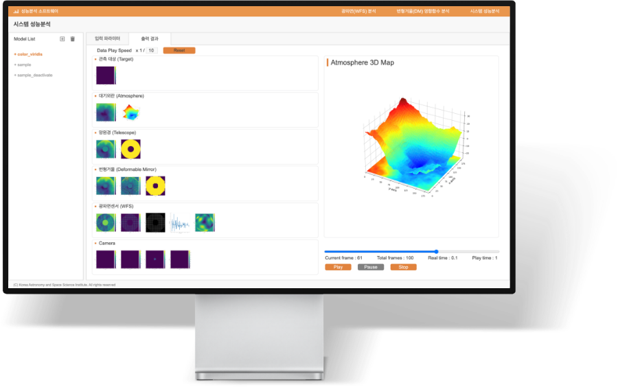
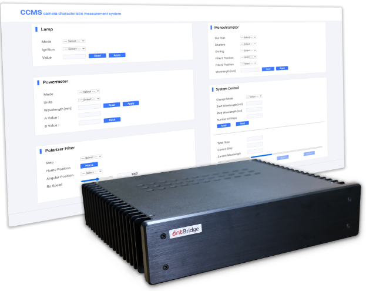
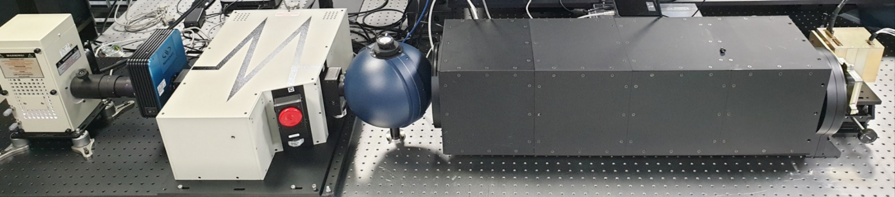
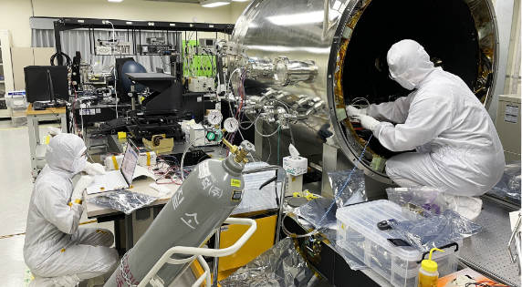
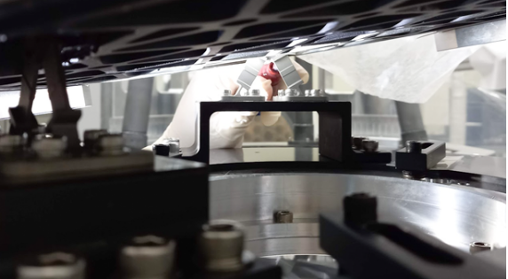

Imaging Technology
이미징 테크놀로지로 숨겨진 세상을
더 선명하게 봅니다
많은 머신 비전 어플리케이션에서 편광 카메라를 사용하면 표준 흑백, 컬러, 다중 스펙트럼 또는 초분광 카메라로는 얻을 수 없는 정보를 제공 할 수 있습니다. 또한 편광이미지의 영상을 획득하고 분석하는 프로그램을 자체 개발하고 편광 카메라 특성 측정 장비를 구축하여 표준화 테스트를 할 수 있습니다.
Application Software
사용자의 요구에 맞춘 커스터마이징
응용소프트웨어를 개발합니다
대기의 왜곡을 보상하기 위해 실시간 분석 프로그램을 개발, 광파면을 조작하여 광학 시스템의 성능을 향상시키는 데 사용되는 알고리즘을 보유하고 있습니다. 사용자의 요구에 맞는 C, C++, Python 기반 커스터마이징 소프트웨어를 개발합니다.

Integration & Control
솔루션과 결합한 시스템 통합과
편리한 제어시스템을 제공합니다
사용자 요구에 따라 하드웨어·소프트웨어 · 네트워크 등과 솔루션을 결합한 시스템 통합(System Integration)을 제공합니다. 또한 사용자 편의를 위해 웹 기반 GUI를 제공하여 각 장치를 쉽게 제어할 수 있습니다.


Experiment Support
다양한 사용환경, 절차에 따라
맞춤형 실험 지원을 제공합니다.
각종 장비의 조립, 설치 및 구동테스트와 전문 소프트웨어와 장비를 이용하여 특정한 제품, 공정 및 서비스 등을 규정된 절차에 따라 측정하는 각종 기술적인 지원을 제공합니다. 연구,산업,우주 등 다양한 사용환경에 맞출 수 있습니다.

